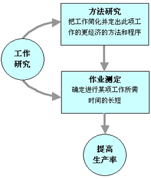

制造业中的工业工程
尽管现代工业工程应用极其广泛，但制造业仍然是最主要和有代表性的一个领域。所谓制造业就是生产各种产品的工业。制造工业具有这样的特点，即其生产活动的全部内容包括技术和管理两个方面：①围绕材料加工技术(或通常说的制造技术)研究工艺与设备，这是制造的硬件部分：②关于制造系统，即由人、材料和设备等组成的集成系统的控制和管理，这是制造的软件部分。从这个意义上讲，工业工程正是将两者有机结合起来的原理和技术。
(一)工作研究
工作研究是工业工程体系中最重要的基础技术，主要以提高生产率和整体效益为目的。利用方法研究和作业测定(工作衡量)两大技术，分析影响工作效率的各种因素，帮助企业挖潜、革新，消除人力、物力、财力和时间方面的浪费，减轻劳动强度，合理安排作业，用新的工作方法来代替现行的方法，并制定该项工作所需的标准时间，从而提高劳动生产率和经济效益的一门现代化的科学管理技术。

图2-1 工作研究
图2-1简要说明了实施工作研究的目标和程序，也说明了方法研究与作业测定的相互关系，前者寻求减少工作量，建立更经济的作业方法与标准；后者则旨在制订相应的时间标准，从而为制定科学、合理的定额和生产系统的优化设计与管理提供依据。因此，工作研究的应用不仅直接促使生产率提高，而且也是应用其他工业工程技术，如设施规划与设计、生产计划与控制等的必要基础。
(二)设施规划与设计
设施规划与设计是对系统进行具体的规划和设计，包括厂址选择、工厂平面布置、物流分析和物料搬运方法与设备选择等。使各生产要素和各子系统(设计、生产、制造、供应、后勤服务、销售等部门)按照工业工程要求得到合理的配置，组成更富有生产力的集成系统。它是工业工程实现系统整体优化、提高整体效益的关键环节。因此，它还涉及系统工程、运筹学、工作研究、成组技术、管理信息系统、工效学、工程经济学、计算机模拟等许多专业知识的综合应用，以解决系统优化设计的问题。
(三)生产计划与控制
生产计划与控制主要研究生产过程和资源的组织、计划、调度和控制，是保证整个生产系统有效运行的核心。内容包括生产过程的时间和空间组织、生产和作业计划、生产线平衡、库存控制等，分析研究生产作业和库存控制的理想方案，通过对人、财、物、信息的合理组织调度，加快物流、信息流和资金周转率，从而达到高效率和高效益的统一。
常用的方法有：网络计划(计划评审技术PERT、关键路线法CPM)、经济订货量(EOQ)、经济生产批量(EPQ)和现代生产与库存管理方法——物料需求计划(MRP)、生产资源计划(MRPII)和准时制(JIT)等。
(四)工程经济
工程经济是关于工业工程必须应用的经济知识，即投资效益分析与评价的原理和方法。主要是通过对整个生产系统的经济性研究、多种技术方案的成本与利润计算、投资风险分析评价与比较等，为选择技术先进、效益最高或费用最低的方案提供决策依据。
内容主要包括：工程经济原理、资金的时间价值、工程项目可行性研究、技术改造与设备更新的经济分析，以及常用的年费用法、现值法、投资收益法(ROI)，内部收益率(IRR)、回收期法等。
(五)价值工程
价值工程亦称价值分析，也是工业工程师为寻求高效益、低成本方案常用的一种方法。主要用于新产品、新技术开发等过程中，为了有效地改善价值而进行的有组织的活动。就是对产品技术或服务进行“功能”与“成本”对比研究，以达到实现“必要功能”而“成本最低”的目的。通过价值分析，寻求产品设计、材料选择、制造工艺等方面的改进，从而有效地提高生产率。
(六)质量管理与可靠性技术
质量管理是指为保证产品或工作质量所进行的质量调查、计划、组织、协调与控制等各项工作，其中最主要的是根据对产品和生产过程的分析，为达到规定的质量标准，利用科学方法对生产进行严格检查和控制，预防不合格品产生，即实行质量控制。
内容包括：传统的质量控制方法、现代质量管理——质量保证、生产保证、全面质量控制(TQC)和全面质量管理(TQM)。
可靠性技术是为维持系统有效运行的原理和方法，包括可靠性概念、故障及诊断分析、使用可靠性、系统可靠性、可靠性设计与管理等。
(七)工效学
工效学亦称人类工程学、人类因素、人机工程学等，是综合运用生理学、心理学、卫生学、人体测量学、社会学和工程技术等知识，研究生产系统中人、机器和环境之间的相互作用的一门边缘学科，是工业工程的一个重要分支专业基础知识。通过对作业中人体机能、能量消耗、疲劳测定、环境与效率的关系等的研究，在系统设计中，科学地进行工作职务设计、设施与工具设计、工作场地布置、确定合理的操作方法等，使作业人员获得安全、健康、舒适、可靠的作业环境，从而提高工作效率和效果。
(八)组织行为学
组织行为学是涉及对组织及人的行为进行系统研究的学问，包括组织的产生、成长和发展；个人、群体在组织中的作用及相互关系；组织与外界的相互作用：工作激励；组织管理与领导的有效性等，为工业工程进行组织管理系统设计提供必需的基础知识和原理。
(九)管理信息系统(MIS)
管理信息系统是为一个企业的经营、管理和决策提供信息支持的计算机综合系统，包括应用计算机硬件和软件、操作程序、分析模型和数据库等。主要内容包括：计算机基础管理信息系统的组成、数据库技术、信息系统设计与开发等。
(十)现代制造技术
现代制造技术也是现代工业工程的基础和组成部分。主要内容包括：数控技术(NC、CNC)、成组技术(GT)、计算机辅助设计与制造(CAD/CAM)、计算机辅助工艺设计(CAPP)、柔性制造单元和系统(FMC、FMS)以及计算机集成制造(CIM)等。
现代工业工程的主要特征之一是应用计算机和发展集成生产，因此，掌握和应用先进制造技术方面的知识，是工业工程师在现代生产条件下获得市场竞争优势的重要途径。